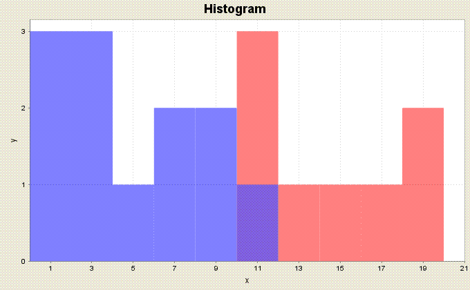

Graph > Histogram
A histogram shows the frequencies of a number of bins (or classes) with
numerical boundaries. The width of each bin is the same. With this utility,
you can create histograms that represent the frequences or relative
frequencies of a set of bins.
Any data value less than the minimum of all values will be assigned to the first bin,
and any data value greater than the maximum will be assigned to the last bin.
Values at bin boundary will be assigned to the
higher bin.

The histogram graph utility allows the user to specify graph variables
containing data values and optionally a group variable.
It also provides the options of having a plot title, axis labels,
and legend.
- To open the histogram utility, select Graph > Histogram.
- In the Graph Variables list, select the column variable(s)
containing data values for which the plot will be created. A different
color is used for each column variable.
- (optional) If the column variables can be categorized by groups, select
the column containing the group names corresponding to the data values
in the Grouped By Categories in: drop-down menu.
- Select whether to plot the frequencies or the relative frequencies of
the bins under Heights of bars represent:.
- There are two ways to control binning on the x-axis:
- Provide the number of bins/classes, the minimum x value, and the maximum.
The class width is determined by (maximum - minimum) / (number of classes).
If the minimum and maximum are not provided, they will be the minimum and
maximum of all the data values.
- Provide the class width and the minimum x value. The number of classes
will be the smallest integer such that all data values are classified.
- Other Options:
- Enter the tick mark units (distance between two
consecutive ticks) in the tick mark units text field for the y-axis.
- Enter the plot title in the Plot Title: text field.
- Enter the labels for the x and y axes.
- Select the Show Legend check box to show a legend indicating
the different groups.
- Click OK to create the histogram.